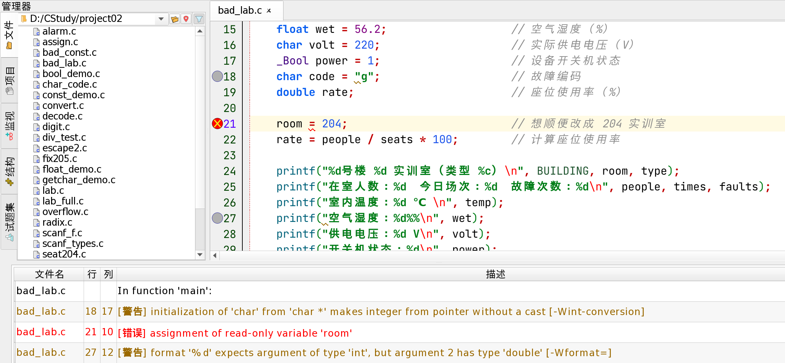

学校 6 号实训楼共有 10 个实训室，每个实训室都需要建立一份完整运行的数据档案。包含：实训室类型（'A'～'Z'）、编号（201～210）、总座位数（48）、实时在室人数、今日实训场次、设备故障次数、室内环境温度（1 位小数）、空气湿度（1 位小数）、实际供电电压（0～380 V）、设备开关机状态、故障编码（'g'～'n'）。以下是某位同学的 C 语言编程过程，请完成异常诊断。
（1）设计数据字典。编程之前，这位同学先为每项数据确定了变量名、范围或精度和类型，整理成数据字典（见表2-16）。
表2-16某同学设计的数据字典（初稿）
| 变量名 | 含义 | 范围/精度 | 类型 | 选择理由 |
|---|---|---|---|---|
BUILDING | 楼栋号 | 6 | 符号常量 | 固定不变 |
room | 实训室编号 | 201～210 | const int | 编号不变 |
seats | 总座位数 | 48 | const int | 座位数不变 |
type | 实训室类型 | 'A'～'Z' | char | 一个字母 |
people | 实时在室人数 | 0～48 | int | 人数是整数 |
times | 今日实训场次 | 0 及以上 | int | 场次是整数 |
faults | 设备故障次数 | 0 及以上 | int | 次数是整数 |
temp | 室内环境温度 | 1 位小数 | int | 温度取整数就够了 |
wet | 空气湿度 | 1 位小数 | float | 有小数 |
volt | 实际供电电压 | 0～380 V | char | 数值不大，char 最省空间 |
power | 设备开关机状态 | 1 开机，0 关机 | _Bool | 只有两种状态 |
code | 故障编码 | 'g'～'n' | char | 一个字母 |
rate | 座位使用率 | 1 位小数（%） | double | 有小数 |
（2）编写程序。按照数据字典，这位同学以 203 实训室为例写出了下面的程序（带注释）。
（3）编译和运行。按 F9 编译，信息面板中出现了 1 个错误、2 个警告（见图2-20），没有生成可执行程序。

这位同学删除第 21 行后再编译，只剩下 2 个警告，程序可以运行了，运行结果如图2-21 所示。
程序虽然能运行了，但对照任务要求可以发现，有 5 项数据显示异常（见表2-17）。再加上第 21 行的编译错误，这份程序至少有 6 处问题需要诊断。
表2-17运行结果中的异常
| 数据 | 应该显示 | 实际显示 |
|---|---|---|
| 室内温度 | 24.5 ℃ | 24 ℃（小数部分丢了） |
| 空气湿度 | 56.2% | −1610612736%（毫无意义的数） |
| 供电电压 | 220 V | −36 V（变成了负数） |
| 故障编码 | g | 空白（什么也没有显示） |
| 座位使用率 | 75.0% | 0.0% |
完成本任务，既要找出问题、说清原因，还要改正数据字典和程序，得到一份规范、完整的数据档案：
每种数据类型占用的字节数是固定的，所以能存放的数值也有范围（见表2-18）。选择类型时，要先想清楚数据可能的最大值和最小值。
表2-18常用数据类型的取值范围（小熊猫C++）
| 类型 | 字节数 | 取值范围 | 适合存放 |
|---|---|---|---|
char | 1 | −128～127 | 一个字符 |
unsigned char | 1 | 0～255 | 较小的非负整数 |
short | 2 | −32768～32767 | 较小的整数 |
int | 4 | −2147483648～2147483647（约 ±21 亿） | 一般的整数 |
long long | 8 | 约 ±9.2×1018 | 很大的整数 |
float | 4 | 约 ±3.4×1038，6～7 位有效数字 | 精度要求不高的小数 |
double | 8 | 约 ±1.8×10308，15～16 位有效数字 | 一般的小数（本书统一使用） |
如果把超出范围的数存入变量，变量放不下，就会发生溢出，得到一个完全不同的值。下面的程序把 220、380 存入 char 型变量，把 40000 存入 short 型变量：
char 型只有 8 位，最多表示 256 个不同的数。在小熊猫C++ 中，超出范围的数会“绕回来”：220 − 256 = −36，380 − 256 = 124，40000 − 65536 = −25536。这就像只有 3 位数字的计数器，999 再加 1 就变成了 000。注意，编译器只对 380 给出了警告，对 220 和 40000 却没有任何提示。所以，不能完全依靠编译器发现溢出，选类型时要先估计数据的范围。
精度是指数据能精确到什么程度。对于带小数的数据，要注意以下三点：
%.1f 实现；变量本身仍然用 double 型保存。不同类型的数据在一起赋值或运算时，需要先转换成同一种类型。类型转换有两种方式。
（1）自动类型转换。由系统自动完成，常见的有两种情况：一是赋值时，右边的值自动转换为左边变量的类型，如把 24.9 赋给 int 型变量，得到 24；二是运算时，char 型数据先转换为 int 型，int 型与 double 型数据一起运算时，int 型先转换为 double 型，结果也是 double 型。
（2）强制类型转换。在数据前面加上“(类型名)”，把它强行转换为指定的类型，一般形式为：
(类型名)(表达式)例如 (double)people 把 people 的值转换为 double 型（people 本身的类型不变），(int)sizeof(char) 把求出的字节数转换为 int 型。要转换的是一个表达式时，表达式要加括号，如 (double)(a + b)。
第 5 行把 24.9 存入 int 型变量，得到 24，不是四舍五入。第 6 行虽然 b 是 double 型，但 7 / 2 是两个整数相除，先得到 3，再转换为 3.0。第 7、8 行参加除法的数中有一个是小数，就按小数除法计算，得到 3.5。
第 3 点中的 7 / 2 说明：两个整数相除，结果仍然是整数，小数部分被直接舍去。计算座位使用率时，people / seats 就是 36 / 48，结果是 0，再乘 100 还是 0。下面比较三种写法：
写法 A：从左往右计算，先算整数除法 36 / 48 得 0，再乘 100.0，结果是 0.0。写法 B：括号里的整数除法已经得到 0，再转换为 double 型也只是 0.0。写法 C：先把 people 转换为 36.0，再除以 48 得 0.75，乘 100 得 75.0，结果正确。也可以写成 people * 100.0 / seats，让小数先参加运算。
printf 和 scanf 中的格式说明符必须与数据的类型一致，否则编译器一般会给出警告，运行结果也会出错（见表2-19）。
表2-19格式说明符与数据类型
| 类型 | printf | scanf | 用错时的后果（小熊猫C++ 实测） |
|---|---|---|---|
int | %d | %d | scanf 中漏写 &，编译器给出警告，程序运行时可能出错 |
double | %f | %lf | 用 %d 输出，得到 −1610612736 之类毫无意义的数；用 %f 输入，读不进正确的值 |
char | %c | %c | 用 %d 输出，得到的是 ASCII 码，如 n 显示为 110 |
用一个 scanf 输入多个不同类型的数据时，每个格式说明符都要与对应的变量一致。
例2-7 从键盘输入在室人数、温度和故障编码，再把它们输出。
第 10 行格式控制字符串中 %c 前面的空格不能省略。%c 会把空格、回车也当作字符读入，前面加一个空格，表示先跳过输入中的空格和回车，再读入字符。如果省略这个空格，实测 code 读到的是 24.5 后面的空格，而不是 g。
任务二中讲过，'g' 是字符，"g" 是字符串。写成 char code = "g"; 时，存入 code 的不是字母 g，而是字符串 "g" 在内存中存放位置（地址）的一部分，结果无法预料。本例中得到的是空字符（ASCII 码为 0），所以故障编码显示为空白。
编译器给出的提示分为错误和警告两类，它们的区别见表2-20。
表2-20错误与警告
| 类别 | 信息面板中的标记 | 能否生成 .exe | 处理方法 |
|---|---|---|---|
| 错误 | [错误]，红色 | 不能，程序无法运行 | 必须改正 |
| 警告 | [警告]，黄褐色 | 能，程序可以运行 | 说明程序很可能有问题，要逐条检查，一般都应改正 |
对照图2-20 中的三条提示：
提问我是 C 语言初学者。请把下面的 GCC 编译提示翻译成中文，并用我能听懂的话解释可能的原因：（粘贴信息面板中的提示原文）
表2-17 的 5 项异常中，温度丢了小数、电压溢出、座位使用率为 0，编译器都没有给出任何提示。编译器只能检查语法和明显的类型问题，数据选错类型、算法写错，只能靠我们认真核对运行结果才能发现。
int n = 7.9; 后，n 的值是。5 / 2 的值是，5 / 2.0 的值是。int a = 3, b = 4;，要得到 a 除以 b 的准确结果 0.75，正确的写法是（ ）。a / bB. (double)(a / b)C. (double)a / bD. (int)a / b本任务的程序在任务一、任务二的基础上编写，楼栋号是固定的配置值，用符号常量表示：
根据相关知识逐项检查表2-16，修改后的数据字典见表2-21，底色加深的行是修改或新增的内容。
表2-21修改后的数据字典
| 变量名 | 含义 | 范围/精度 | 类型 | 选择理由 |
|---|---|---|---|---|
BUILDING | 楼栋号 | 6 | 符号常量 | 固定的配置值 |
room | 实训室编号 | 201～210 | const int | 整数，运行中不变 |
seats | 总座位数 | 48 | const int | 整数，运行中不变 |
type | 实训室类型 | 'A'～'Z' | char | 一个字母 |
people | 实时在室人数 | 0～48 | int | 整数，从键盘输入 |
times | 今日实训场次 | 0 及以上 | int | 整数 |
faults | 设备故障次数 | 0 及以上 | int | 整数 |
temp | 室内环境温度 | 1 位小数 | double | 有小数，int 会丢掉小数部分；从键盘输入 |
wet | 空气湿度 | 1 位小数 | double | 有小数，统一用 double，输出用 %.1f |
volt | 实际供电电压 | 0～380 V | double | 380 超出 char 的范围，电压也可能有小数 |
power | 设备开关机状态 | 1 开机，0 关机 | _Bool | 只有两种状态 |
code | 故障编码 | 'g'～'n' | char | 一个字母，用单引号；从键盘输入 |
empty | 空座位数 | 0～48 | int | 新增：计算得出的整数 |
rate | 座位使用率 | 1 位小数（%） | double | 有小数，计算时要避免整数除法 |
secret | 加密报文 | 'H'～'O' | char | 新增：由故障编码加密得到 |
用一个 scanf 输入三项实时数据，注意 double 型用 %lf，%c 前面加空格。处理时用强制类型转换避免整数除法。输出时整数用 %d，小数用 %.1f，字符用 %c。
各项数据都按要求正确显示了。最后，把诊断过程整理成异常诊断记录（见表2-22），行号是指 bad_lab.c 中的行号。
表2-22异常诊断记录
| 行号 | 原来的写法 | 问题类型 | 原因 | 修改方法 |
|---|---|---|---|---|
| 14 | int temp = 24.5; | 精度丢失 | int 型不能保存小数 | 改为 double 型，用 %.1f 输出 |
| 15、27 | float wet 用 %d 输出 | 格式不匹配 | %d 只能输出整数 | 改为 double 型，用 %.1f 输出 |
| 16 | char volt = 220; | 溢出 | char 型最大只能存放 127 | 改为 double 型 |
| 18 | char code = "g"; | 字符与字符串混用 | "g" 是字符串，不是字符 | 改为 'g' |
| 21 | room = 204; | 修改只读变量 | room 用 const 定义 | 删除；要改编号就修改定义处的初值 |
| 22 | people / seats * 100 | 整数除法 | 36 / 48 的结果是 0 | 改为 (double)people / seats * 100 |
训练 1 205 实训室数据诊断。205 实训室在室 35 人，温度 25.6 ℃，故障编码为 n。下面的程序编译时没有任何提示，但运行结果与预期不同。请找出问题并改正，填写诊断记录。
| 行号 | 问题 | 修改方法 |
|---|---|---|
训练 2 为光伏电站的数据选择类型。某光伏电站的监控程序要保存下表中的数据，请参考表2-18，为每项数据选择合适的类型，并说明理由。
| 数据 | 示例值 | 类型 | 理由 |
|---|---|---|---|
| 光伏板温度 | 45.3 ℃ | ||
| 逆变器编号 | B | ||
| 今日发电量 | 1250 度 | ||
| 电站累计发电量 | 3200000000 度 | ||
| 是否已并网 | 是 |
本项目从实训室的 AI 智能数据看板出发，学习了 C 语言的常量与变量、数据类型、字符和数据的输入，并诊断了数据处理中的常见异常。主要内容归纳如表2-23 所示。
表2-23项目二知识要点
| 知识点 | 要点 |
|---|---|
| 常量与变量 | 直接常量；符号常量 #define 名字 值（不加分号）；只读变量 const。变量先定义后使用，三要素是变量名、类型、值；= 是赋值 |
| 数据类型 | int 存整数；double 存小数（输入用 %lf）；char 存一个字符；_Bool 存 1 或 0。各类型有固定的字节数和取值范围，可以用 sizeof 查看 |
| 标识符 | 由字母、数字、下划线组成，不能以数字开头，区分大小写，不能用关键字；起名要见名知意 |
| 字符 | 字符以 ASCII 码存放：'0' 是 48，'A' 是 65，'a' 是 97，大小写相差 32；转义字符 \n、\t、\\、\'、\"、\0；"g" 比 'g' 多一个 '\0' |
| 数据的输入 | getchar 读入一个字符；scanf 按格式读入，变量名前加 &；int 用 %d，double 用 %lf，char 用 %c |
| 数据异常 | 超出范围会溢出；int 不能保存小数；两个整数相除结果是整数；格式说明符要与类型一致；错误必须改正，警告也要认真对待，没有提示不等于没有问题 |
学完本项目，请检查自己是否做到：
任务三中，我们自己完成了 bad_lab.c 的异常诊断。本节换一种方式：请 AI 帮忙纠错，再用运行结果逐条检验它的建议。这样做既能提高效率，又能练习判断 AI 回答的对错。
纠错时，提供的材料越完整，AI 的回答越有针对性。除了程序，还要把编译器提示、运行结果和期望结果一起提供。
身份我是高职一年级学生，刚学完 C 语言的数据类型。
背景我在用小熊猫C++ 编写实训室数据档案程序（数据都是课堂模拟的），程序有错误。
材料① 程序：（粘贴 bad_lab.c 的全部代码）；② 编译器提示：（粘贴信息面板中的提示原文）；③ 运行结果：（粘贴图2-21 的结果，并写出每项应该显示什么）
要求请按行号列出每个问题的原因和修改方法，用表格回答；只用我学过的知识。
你的程序主要有 5 处问题：
① 第 18 行："g" 是字符串，应改为 char code = 'g';
② 第 14、15 行：温度和湿度有小数，应定义为 double 型，用 %.1f 输出；如果要从键盘输入温度，可以写 scanf("%f", &temp);
③ 第 16 行：char 最大只能存 127，电压可以改用 unsigned char，范围是 0～255，还能节省内存。
④ 第 22 行：整数相除结果为 0，把 100 改为 100.0 即可：rate = people / seats * 100.0;
⑤ 第 21 行：room 是只读变量，不能赋值，应删除这一行；如果要显示 204 实训室，就修改第 8 行的初值。
AI 很快找出了问题，但它的建议不一定都对。下面逐条验证。
（1）建议①和⑤。按建议修改后重新编译，第 18 行的警告和第 21 行的错误都消失了，故障编码正常显示为 g，说明这两条建议正确。
（2）建议③：用边界值检验。电压的范围是 0～380 V，而 unsigned char 最大只能存放 255。检验范围时要特别试一试边界值，这里取最大值 380：
编译器给出了溢出警告，380 V 显示成了 124 V。可见建议③是错误的：AI 只注意到 220 能放进 unsigned char，却忽略了电压最高可达 380 V。应该改用 double 型（或 int 型）。
（3）建议②：检验输入格式。把温度改为从键盘输入，按建议用 %f 读入 double 型变量：
输入 24.5，显示的却是 0.0 ℃，编译器也提示“%f 需要 float * 型的参数，但第 2 个参数是 double * 型”。所以建议②只能部分采纳：温度和湿度改为 double 型是对的，但输入时要用 %lf。
（4）建议④。这正是相关知识中 div_test.c 的写法 A，运行结果是 0.0%，因为乘 100.0 之前，整数除法已经得到 0。应该改为 (double)people / seats * 100。
验证结果汇总见表2-24。
表2-24AI 建议验证表
| 建议 | 验证方法 | 验证结果 | 结论 |
|---|---|---|---|
| ① | 修改后编译、运行 | 警告消失，故障编码显示 g | 采纳 |
| ② | 输入 24.5，观察输出 | 显示 0.0 ℃，并有警告 | 部分采纳：用 double，输入用 %lf |
| ③ | 用边界值 380 测试 | 显示 124 V，并有溢出警告 | 不采纳：改用 double |
| ④ | 运行 div_test.c 写法 A | 显示 0.0% | 不采纳：先强制转换再除 |
| ⑤ | 修改后编译 | 错误消失 | 采纳 |
可以把验证结果作为“证据”反馈给 AI 继续追问，例如：“按你的建议③，电压 380 V 显示成了 124 V，编译器还提示溢出，应该怎么改？”最终改好的程序就是任务三中的 lab_full.c。
① 请 AI 纠错时，提供完整的材料：程序、编译器提示原文、运行结果和期望结果；② AI 的建议要逐条验证，特别要用边界值测试；③ 有证据才采纳，验证不通过就带着证据追问，或者自己修改；④ 不把真实的个人信息和单位内部数据发给 AI。